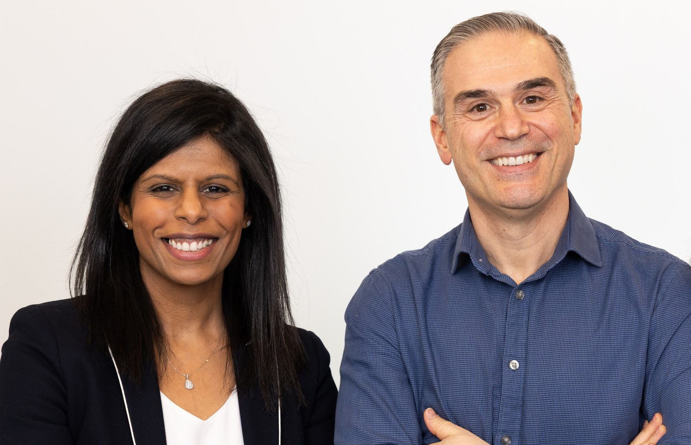
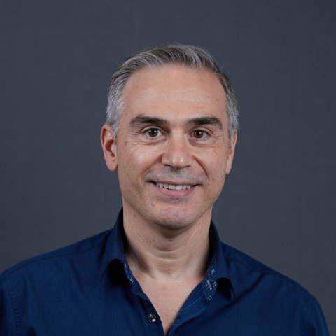

General Rheumatology
Assessment and long-term management of inflammatory arthritis and autoimmune rheumatic disease, with a plain-language explainer for every condition and a clinician layer for the ones that need it.

Conditions we cover
What it is, how it is diagnosed, treat-to-target treatment, monitoring, and living well.
Read guideConditionJoint, tendon, skin, and spine disease, and how treatment is matched to it.
Read guideConditionInflammatory spine and sacroiliac joint disease: symptoms, diagnosis, the treatment ladder, and living well.
Read guideConditionLupus explained: what it is, how it is diagnosed, the treatment backbone from hydroxychloroquine to biologics, monitoring, and living well.
Read guideConditionDry eyes and mouth explained, plus the wider effects on the body, how it is diagnosed, symptom and organ-directed treatment, monitoring, and the small lymphoma risk to watch for.
Read guideConditionThe most common inflammatory arthritis: what causes it, treating an attack, and the treat-to-target uric-acid-lowering plan that stops flares for good.
Read guideConditionGPA, MPA, and EGPA explained: how these small-vessel vasculitides affect the sinuses, lungs, kidneys, and nerves, and the two-phase plan that brings them into remission.
Read guideConditionThe most common arthritis: what it is, and the layered plan (exercise, weight, injections, medicines) with an honest guide to what helps and what does not.
Read guideSystemic sclerosis and PMR with GCA are being drafted.
Clinic team
MD, FRCPC, MScCH · Rheumatology
Program Director, U of T Rheumatology · Division Head, St. Michael's

BSc, BScPT, MBA, ACPAC
Advanced Practice Physiotherapist · Allied health
Living well
Take the strain off sore or swollen joints, at home and at work.
Read guideOT guidePlan and pace your day so fatigue does not run the show.
Read guideOT guideTechniques, gentle exercises, and splints for hand and wrist arthritis.
Read guideOT guideWhy it matters for arthritis, what actually helps, and free Ontario programs.
Read guide